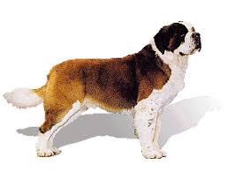
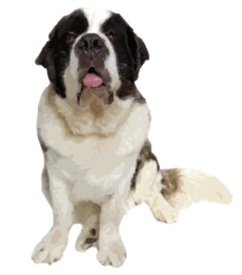

About
The St. Bernard is a large sized breed. It is prized for its intimidating size and loyalty. With an average height of 36 inches, it is an extremley large dog. It requires a lot of physical activity, needing runs several times a day.

The St. Bernard is a large sized breed. It is prized for its intimidating size and loyalty. With an average height of 36 inches, it is an extremley large dog. It requires a lot of physical activity, needing runs several times a day.
St.Bernards are quite easy to train and they have found use in rescue operations. Their large size allows them to easily drag people out of danger and into safety.
St.Bernards are difficult to groom as they have very thick fur and it mats very easily. They also shed a huge amount making your entire house a bundle of fur.
